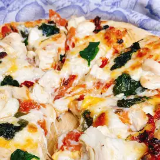

Odin Recipes

Heaven of Meat Pizza
Ingredients:---
- Flour
- Yeast
- Salt
- Mozzeralla Cheese
- Chicken Meat
- Masala
Steps:---
- In large bowl, mix first 4 ingredients.
- Mix water and oil; add to flour mixture.
- Turn onto floured surface; knead for 2 minutes.
- Place in a greased bowl; turning to grease top.
- Cover and let rise for 20 minutes.
- Punch down; place on 12in, greased pizza pan.
- Pat into a circle.
- Topping: Mix first 5 ingredients and spread over crust.
- Put a few pepperoni slices on top of sauce.
- Sprinkle with 1/2 the mozzeralla; 1/2 the monterey jack, and 1/2 the parmesan.
- Put the rest of the pepperoni on.
- Repeat the cheese layer.
- Bake at 400* for 20 minutes or until light brown.
Click to order